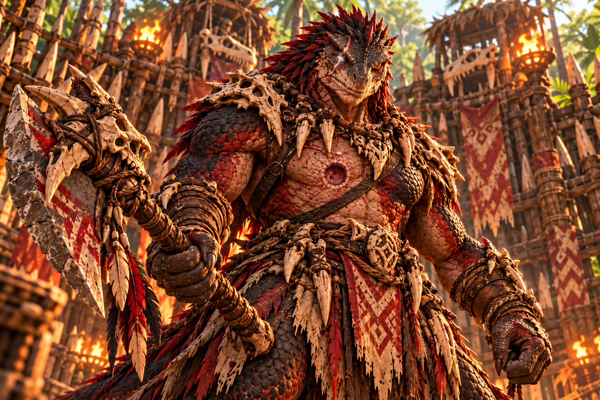

VILLAGGIO SCAGLIAGRIGIA
ARENA DEL CAMPIONE

PARLA CON IL CAMPIONE
CAMPIONE«Nell’arena contano solo resistenza e sangue. Se cerchi il rispetto della tribù, sopravvivi alle dieci ondate.»
Il Campione risponde alle tue domande. I segreti del Mietitore richiedono la vittoria nell'Arena.